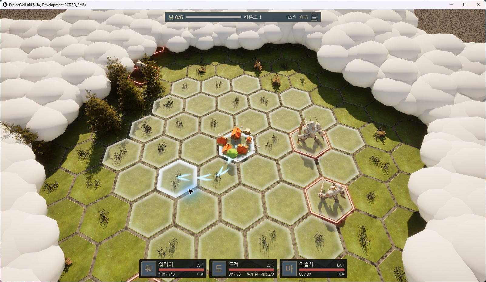

박재현 · 신입 게임플레이 프로그래머
제가 만든 게임으로 사람들이 소통하고 즐거워하는 모습을 보고 싶습니다.
언리얼 엔진으로 게임 만드는 일을 배우고 있습니다. 팀 프로젝트를 다섯 번 했고, 지금은 RPG 한 편을 혼자 만들어 보고 있습니다.
01소개
스파르타 내일배움캠프와 가상융합기술아카데미에서 언리얼 엔진과 C++를 배웠습니다. 프로젝트마다 게임의 한 부분씩을 맡았습니다. 총 쏘는 동작, 경기에 들어가는 과정, 저장과 설정 화면, 여럿이 함께 쓰는 소지품 같은 것들입니다.
아직 배우는 단계입니다. 그래서 만든 기능이 한 번 돌아갔다고 넘어가지 않고, 어떤 상황에서 깨지는지 찾아보는 습관을 들이고 있습니다. 사람들이 즐기는 도중에 게임이 멈추면 안 되기 때문입니다.
02걸어온 길
ZombieWave 팀 프로젝트
좀비를 막는 슈팅 게임에서 총을 쏘고 재장전하는 동작, 적을 찾아 스스로 쏘는 포탑을 만들었습니다.
AFO 8인
2대2 대전 게임에서 팀과 캐릭터를 고르고 경기장에 들어가기까지의 과정을 맡았습니다. 여러 사람이 한 서버에 접속해 겨루는 게임이었습니다.
StillBound 8인
채집하고 짓고 싸우는 생존 게임에서 저장과 불러오기, 설정 화면, 로딩 화면을 맡았습니다.
ProjectLAR 2인
위에서 내려다보는 액션 게임에서 플레이어의 이동과 공격, 기술 사용을 맡았습니다. 제출 날짜가 정해진 상황에서 만들 양을 줄이자고 먼저 제안했고, 꼭 필요한 기능부터 끝내 제출했습니다.
PalSystem 3인
여럿이 함께 하는 게임에서 소지품과 장비를 맡았습니다. 한 사람이 물건을 옮기면 모든 사람의 화면에 똑같이 보이게 만드는 일이었습니다.
ProjectVeil 1인 개발 중
육각형 지도를 탐험하다 적을 만나면 전투로 넘어가는 RPG를 혼자 만들고 있습니다. 게임의 규칙과 프로그램은 직접 만들고, 캐릭터와 배경 그림은 외부 자료를 씁니다.

실제 실행 화면 · 지도 탐험
03풀어 본 문제
서로 다른 프로젝트에서 하나씩 골랐습니다.
StillBound · 설정 화면
설정을 바꾸다가 취소하면 어떻게 되는가
문제
키 설정에서 키를 고르는 즉시 실제 조작이 바뀌면, 취소했을 때 되돌릴 수가 없습니다. 이미 다른 동작에 쓰이는 키를 고를 수도 있습니다.
푼 방법
바꾸는 중인 값과 실제로 쓰는 값을 따로 두었습니다. 겹치는 키가 있는지 먼저 확인하고, 적용을 눌렀을 때만 실제 값으로 옮깁니다.
1키를 고른다
→
2임시로만 보관
→
3겹치는 키 확인
→
4적용 또는 되돌리기
2번에서 실제 조작은 아직 바뀌지 않습니다. 그래서 4번에서 되돌리기를 고르면 아무 일도 없었던 것이 됩니다.
기술 설명 보기
PalSystem · 소지품
내 화면과 실제가 다르면 어떻게 되는가
문제
소지품 창에서 물건을 끌어다 놓을 때 내 화면을 먼저 바꾸면, 서버가 알고 있는 내용과 어긋날 수 있습니다.
푼 방법
화면은 옮겨 달라고 요청만 합니다. 서버가 확인해서 확정한 결과를 모든 사람의 화면에 다시 보여 주도록 역할을 나눴습니다.
내 화면옮겨 달라고 요청
→
서버확인하고 확정
→
모든 사람의 화면확정된 결과로 갱신
무엇을 가지고 있는지는 서버만 정합니다. 화면은 그 결과를 보여 주기만 합니다.
기술 설명 보기
ProjectVeil · 장비 불러오기
절반만 적용된 채 멈추면 어떻게 되는가
문제
저장한 게임을 불러올 때 무기, 보조 장비, 방어구를 차례로 다시 입힙니다. 두 번째에서 실패하면 새 무기와 옛 방어구가 섞인 상태로 남았습니다. 이체가 출금만 되고 입금이 안 된 것과 같습니다.
푼 방법
바꾸기 전 상태를 통째로 기록해 두고, 하나라도 실패하면 전부 원래대로 되돌립니다. 일부러 실패를 일으키는 테스트로 되돌린 뒤의 능력치까지 확인했습니다.
하나라도 실패하면 전부 되돌린다
되돌린 뒤
무기원래 장비
보조 장비원래 장비
방어구원래 장비
기술 설명 보기
04일하는 방식
- 01실패하는 경우부터 적어 봅니다
잘 되는 경우는 금방 확인됩니다. 절반만 적용됐을 때나 데이터가 비어 있을 때는 일부러 만들어 보지 않으면 드러나지 않습니다.
- 02다시 확인할 일은 도구로 옮깁니다
반복해서 봐야 하는 항목은 자동으로 검사하는 테스트로 남깁니다. 게임 데이터의 설정 오류를 한 번에 찾아 주는 검사 도구도 만들었습니다.
- 03AI를 쓰되, 확인한 것과 안 한 것을 구분합니다
Codex와 Claude Code를 코드를 읽고 초안을 만드는 데 씁니다. AI가 만든 코드가 돌아간다고 맞는 것은 아니어서, 직접 실행해 확인한 범위와 아직 확인하지 못한 범위를 나눠 기록합니다.
05 · 아이젠에서 하고 싶은 것
2년 동안 AI를 활용한 게임 개발을 끝까지 해 보고 싶습니다.
지금은 AI로 만든 게임을 좋지 않게 보는 시선이 많습니다. 저는 AI를 쓰는 것이 문제가 아니라, 확인하지 않고 내놓는 것이 문제라고 생각합니다. 그래서 지금도 AI가 만든 코드는 직접 실행해 확인한 것과 아닌 것을 나눠 기록하고 있습니다.
- 하나게임 한 편을 끝까지 완성합니다
AI와 함께 만든 게임을 사람들이 직접 해 볼 수 있는 상태까지 만듭니다. 지금 만들고 있는 ProjectVeil이 출발점입니다.
- 둘만든 과정을 공개합니다
어디를 AI에게 맡겼고, 무엇을 직접 확인했고, 어떤 결과물을 버렸는지 기록으로 남깁니다.
- 셋해 본 사람의 반응으로 확인합니다
사람들이 실제로 해 보고 즐거워하는지를 기준으로 삼습니다. 제가 게임을 만드는 이유와 같은 기준입니다.
그렇게 해서, 그 시선이 바뀌기 시작하는 자리에 서 있는 한 사람이 되고 싶습니다.